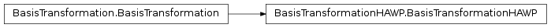
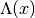
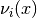
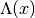
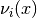

BasisTransformationHAWP¶
About the BasisTransformationHAWP class¶
The WaveBlocks Project
@author: R. Bourquin @copyright: Copyright (C) 2010, 2011, 2012, 2013, 2014, 2015 R. Bourquin @license: Modified BSD License
Inheritance diagram¶

Class documentation¶
- class WaveBlocksND.BasisTransformationHAWP(potential, builder=None)¶
This class implements basis transformations of Hagedorn wavepackets
 between the canonical basis of and the basis 
spanned by the eigenvectors  of the potential
between the canonical basis of and the basis 
spanned by the eigenvectors  of the potential  .
.- __init__(potential, builder=None)¶
Create a new BasisTransformationHAWP instance for a given potential matrix
.Parameters: - potential (A MatrixPotential instance.) – The potential underlying the basis transformation.
- builder (A Quadrature subclass instance.) – An object that can compute this matrix.
- set_matrix_builder(builder)¶
Set the matrix builder. It is responsible for computing the matrix elements
 . This matrix
is used during the basis transformation.
. This matrix
is used during the basis transformation.Parameters: builder (A Quadrature subclass instance.) – An object that can compute this matrix.
- transform_to_canonical(wavepacket)¶
Transform the wavepacket
 given
in the eigenbasis to the canonical basis.
given
in the eigenbasis to the canonical basis.Note that this method acts destructively on the given Wavepacket instance. If this is not desired, clone the packet before handing it over to this method.
Parameters: wavepacket (A Wavepacket subclass instance.) – The Hagedorn wavepacket to transform. Returns: Another Wavepacket instance containing the transformed wavepacket  .
.
- transform_to_eigen(wavepacket)¶
Transform the wavepacket
given
in the canonical basis to the eigenbasis.Note that this method acts destructively on the given Wavepacket instance. If this is not desired, clone the packet before handing it over to this method.
Parameters: wavepacket (A Wavepacket subclass instance.) – The Hagedorn wavepacket to transform. Returns: Another Wavepacket instance containing the transformed wavepacket .